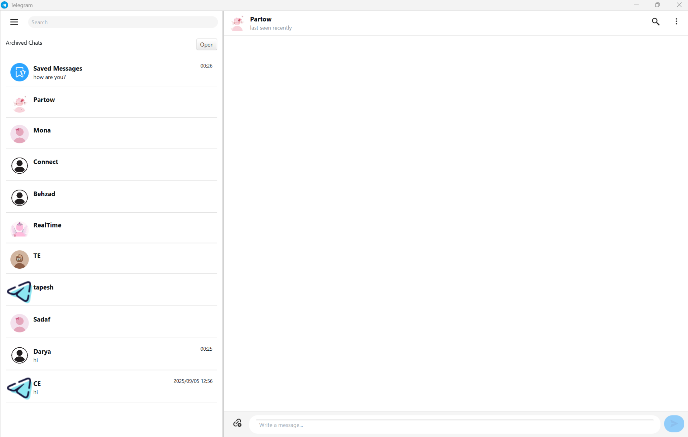
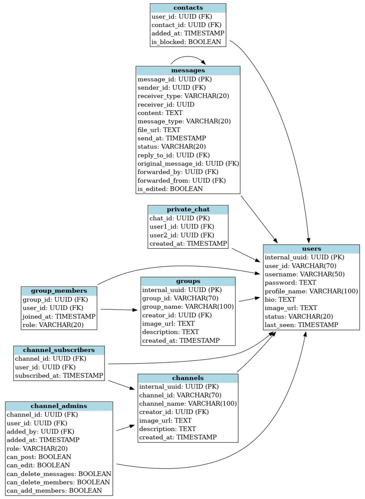
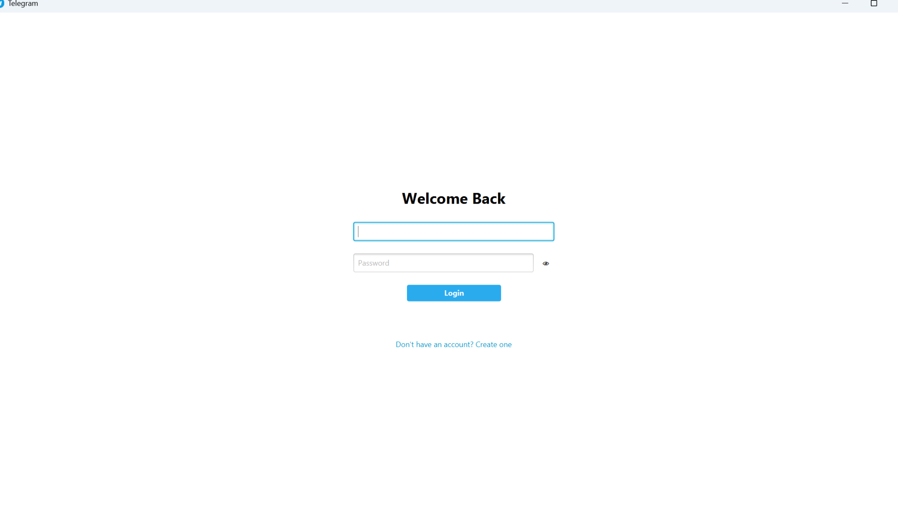
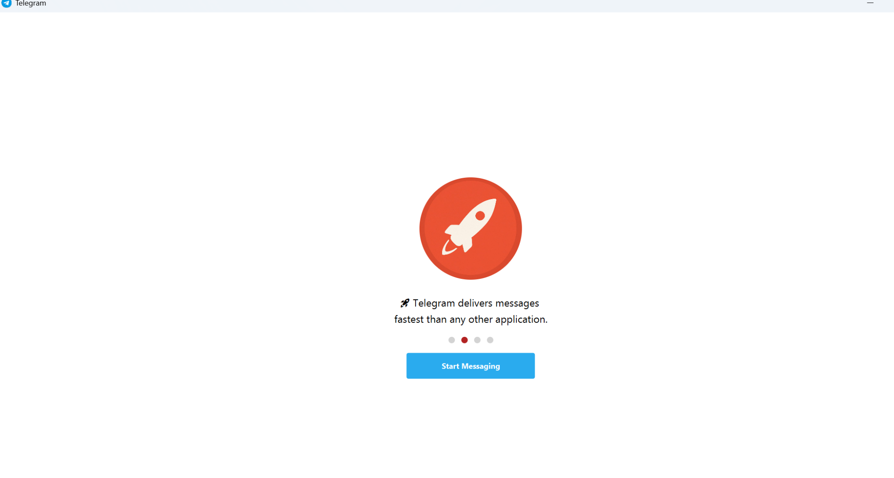
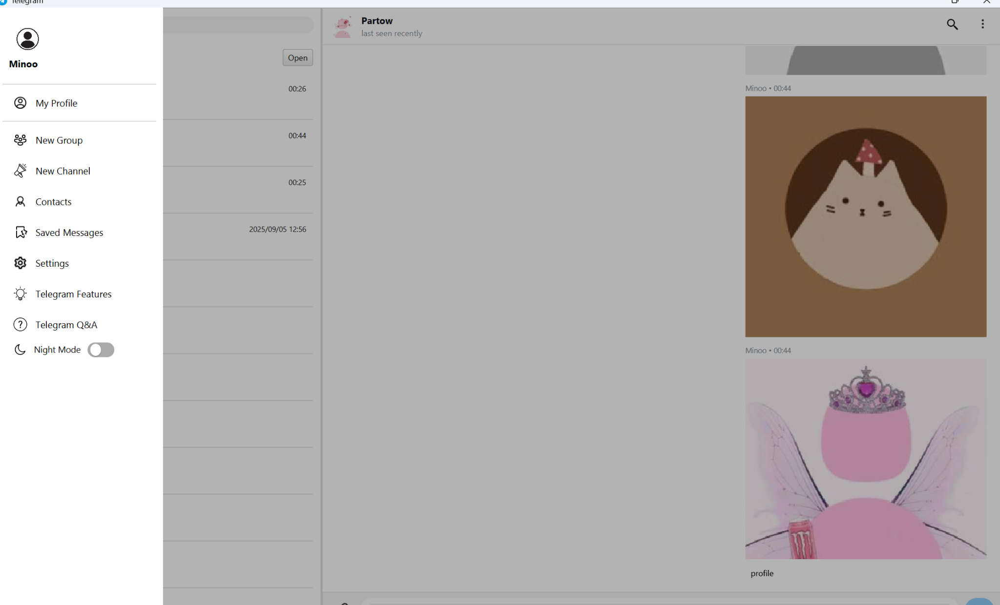

SOFTWARE ENGINEERING · REAL-TIME MESSAGING
Telegram Clone
A desktop messaging system built as the final project of Advanced Programming, with a JavaFX client, multithreaded Java server, socket-based communication, and PostgreSQL persistence.

What the system does
The application supports real-time messaging, saved messages, contacts, private chats, groups, channels, user profiles, and interface overlays. The client sends structured requests through sockets while the server processes multiple users concurrently and persists application state in PostgreSQL.
JavaFX ClientJSON RequestsTCP SocketsMultithreaded ServerPostgreSQL
Architecture and data model


Interface


Engineering concepts
Object-Oriented ProgrammingSocket ProgrammingMultithreadingConcurrency ControlDatabase DesignPersistenceJavaFX UIReal-time Events